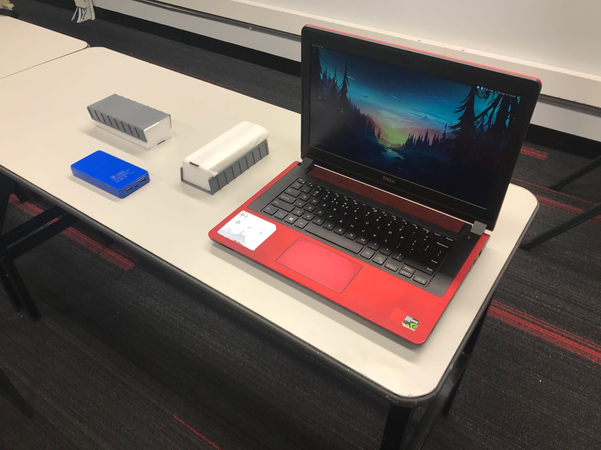
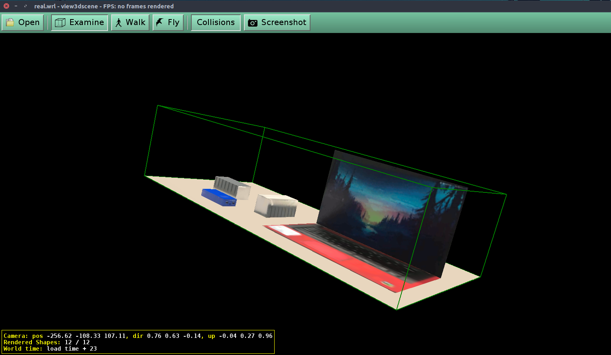
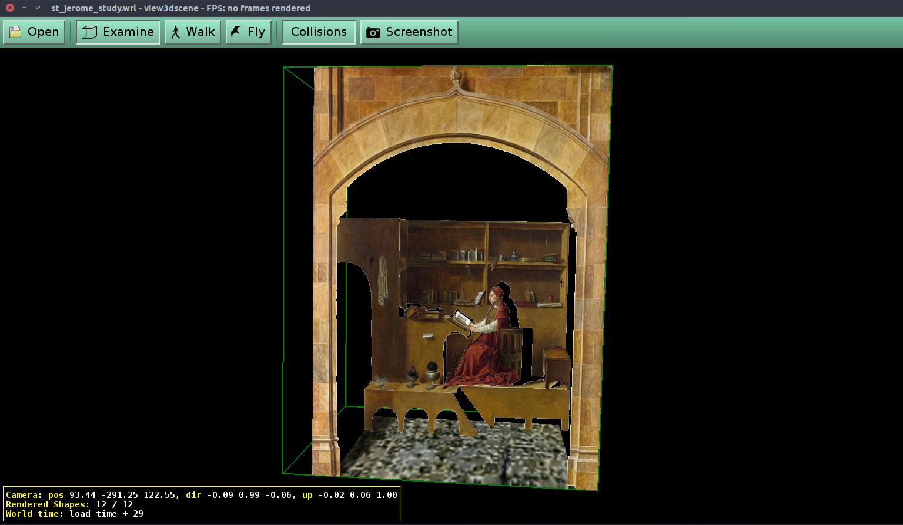
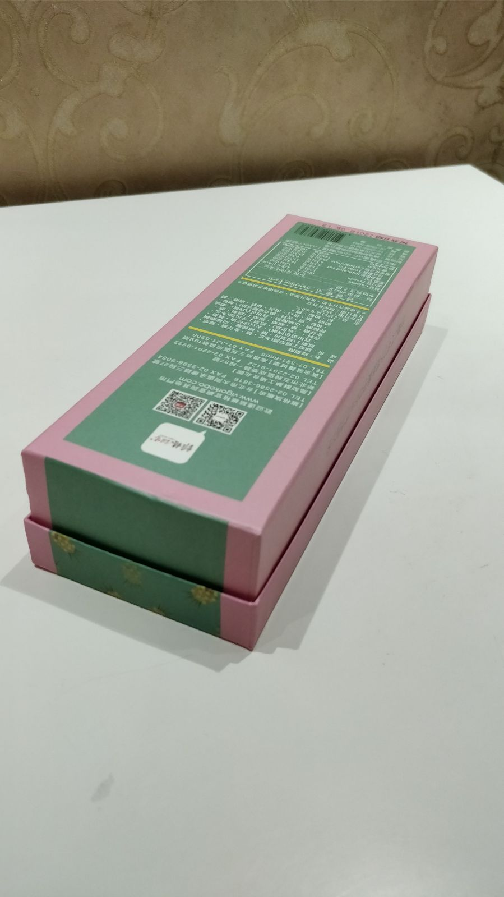

Implementation
Step 1: Calculate Vanishing Points
Vanishing points can be obtained by finding the intersections between parallel lines in a scene. This requires uers to first manually define at least 2 parallel lines along each of the x, y, z axis. Since manual definition of lines are usually inaccurate, we implemented the method by Robert T. Collins to calculate the least square solution of the vanishing points. After computation, vanishing points for the x, y, z axis are defined.
Step 2: Compute Scale
We allow users to define three reference points and one origin point on the image. The reference points and the origin form parallel lines along the three axes. Then, users are prompted to enter the respective physical world lengths of the reference points from origin. Using the provided information, the scale along each axis can be calculated.
Step 3: Calculating Homography
The homography matrix is simply defined by H = [a_xV_x, a_yV_y, a_zV_z, O], where a_i and V_i are the scale and vanishing point of the i-th axis, and O is the defined origin point in Step 2. For image warping purpose, the homography matrix on each of the xy, yz, xz plane are extracted by taking the corresponding column plus the last column. e.g. To obtain the xy homography matrix, we take the first, second and forth column to form a new matrix H_xy = [a_xV_x, a_yV_y, O].
Step 4: Image Inverse Warping
Inverse warping is preferred in this case as no holes are resulted in the image. Inverse mapping is performed by using the OpenCV warpPerspective function with the corresponding homography plane matrix.
Step 5: Retrieve Texture Maps
Generalising to more complex images with more than 3 surfaces (i.e. not a cuboid), carry out steps 1-4 with the origin and reference points along a shape repeatedly to get the xy, yz, yz texture maps of that shape.
Step 6: Calculate Interest Points
After retrieving texture maps, the actual 3D coordinates of that texture map should be calculated.
First, define the origin point O again, where all 3D coordinates will be calculated relative to that origin point.
O should not be changed when calculating all the texture maps' 3D coordinates, and O's 3D coordinates is (0,0,0).
That is, O lies on the z=0 plane.
Second, choose a base point b on the z=0 plane, which should correspond to the one of the points of the projection
of the texture map onto the z=0 plane.
Third, choose a height z=h, which will be used for all proceeding interest points selected.
Fourth, select an interest point r at z=h, and recalculate the homography matrix using the planar perspective
map Hz = [a_xV_x a_yV_y chV_z+O] to obtain new (x,y) coordinates that are relative to the origin. This gives
the 3D coordinates of that particular interest point (x,y,h).
Repeat the second to fourth steps to obtain the 3D coordinates of the other interest points of the texture map.
Step 7: 3D VRML Model Generation
After getting all the interest points of a texture map, the corresponding coordinates of those interest points on the texture map image need to be selected to know how to transform the texture map with respect to the interest points.
User Interface
We implemented a user interface for users to easily define image points and provide information needed for calculation.Hotkey Guide
| Hotkey | Description |
|---|---|
| Left Mouse | Select point. |
| Middle Mouse | Remove last selected point. |
| <x>/ <y>/ <z> | To define parallel lines along each axis, first press the corresponding key. Then, click on the image where a point is to be defined. Users must define even number of points along each axis such that they form a line, and at least two lines. |
| <o> | Defines the origin points on the image for scale and homography matrix computation. |
| <r> | Defines reference points along each axis. Exactly three points must be defined, each along an axis. |
| <d> | Prompts for reference length input for scale computation. |
| <Enter> | Carries out calculation and image warping. |
| <i> | Define interest points. |
| <c> | Clears all defined points. |
| <Space> | Enlarges all defined points for easier control. |
| <Backspace> | Clears CMD screen. |
| <s> | Saves all defined points and reference lengths for future use. |
| <l> | Loads all defined points and reference lengths. |
Results
| Name | Source Image | VRML Model |
|---|---|---|
| Image taken in classroom |  |  |
| Albrecht Dürer - Saint Jerome in His Study (1514) |  | |
|
[Bells and Whistles] Box from two perspectives |
 |

|